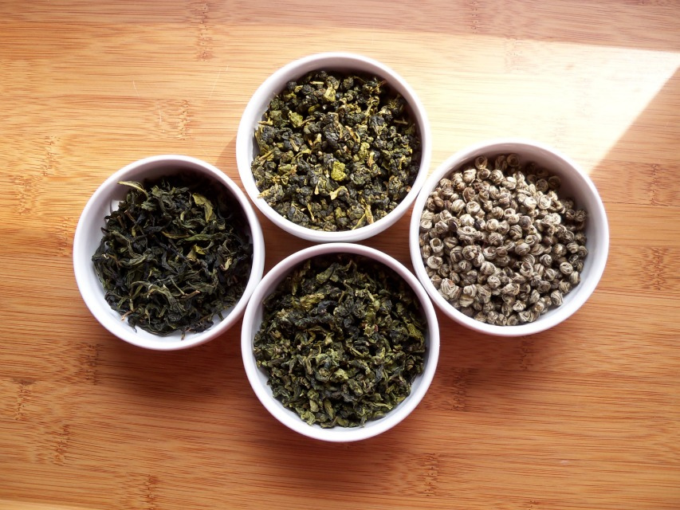
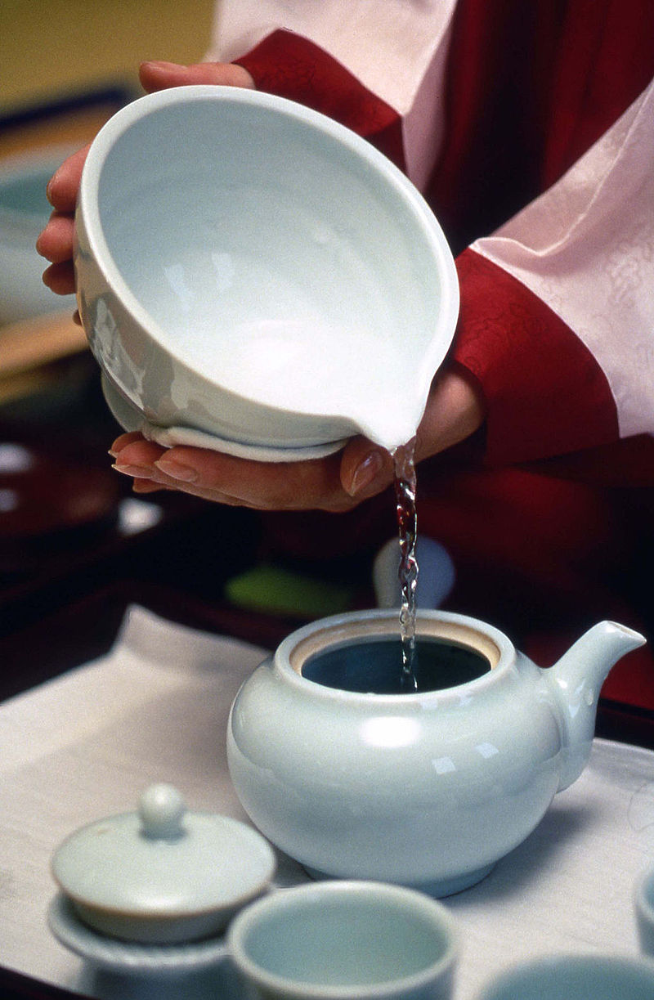

Green Tea
Green tea is a type of tea that is made from Camellia sinensis leaves that have not undergone the same withering and oxidation process used to make oolong and black tea. Green tea originated in China, but its production has spread to many countries in Asia.
Several varieties of green tea exist, which differ substantially because of the variety of C. sinensis used, growing conditions, horticultural methods, production processing, and time of harvest.
Preparation
Steeping, or brewing, is the process of making tea, generally using two grams of tea per 100 ml of water or about 1 teaspoon of green tea per 150 ml cup. Higher-quality teas, like gyokuro, use more tea leaves and are steeped multiple times for short durations.
Steeping temperatures range from 61°C (142°F) to 87°C (189°F) and times from 30 seconds to three minutes.
Generally, lower-quality green teas are steeped hotter and longer while higher-quality teas are steeped cooler and shorter, but usually for multiple times (2-3 typically). Steeping too hot or for too long results in the release of excessive amounts of tannins, leading to a bitter, astringent brew, regardless of initial quality. The brew’s taste is also affected by the steeping technique. Two important techniques are to warm the steeping container beforehand to prevent the tea from immediately cooling down and to leave the tea leaf in the pot and gradually add more hot water as you drink the tea.